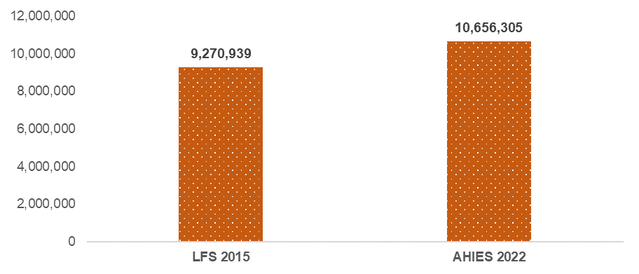
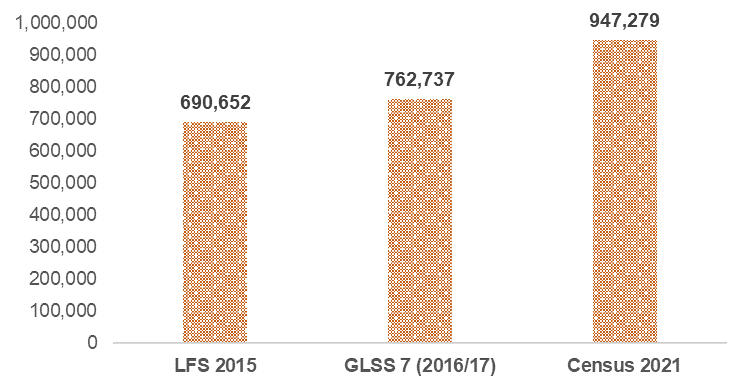
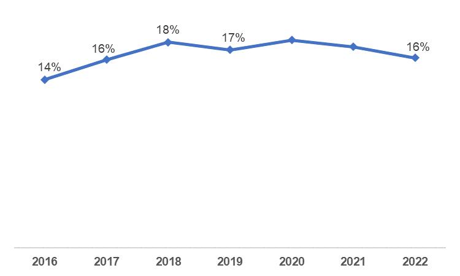
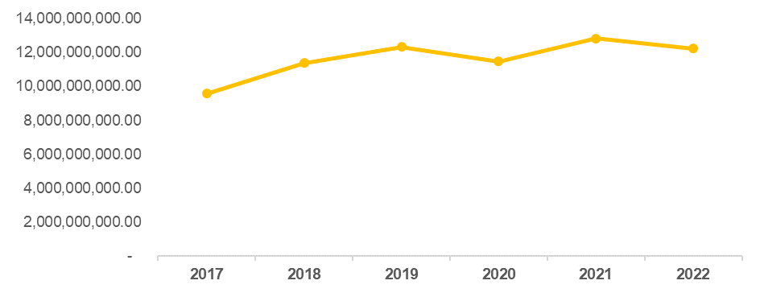

When Ghana’s Vice President, Dr. Mahamudu Bawumia (DMB), was on a health walk in the Eastern Region earlier this month, he told party supporters that his government has created2.1 million jobs since 2017 and these jobs are verifiable. Last week, he doubled down on that claim and shared asnippet of an Excel spreadsheet with jobs supposedly created per year by ministries and agencies as well as the private sector, proxied by SSNIT registrations. The data showed that 2,255,928 total jobs have been created between 2017 and 2022, with 1,280,764 in the public sector and the remaining 975,164 in the private sector. The data shared made me curious and I decided to take a look at data from other publicly available labour market trackers to see how they match up. In short, the numbers shared by the VEEP simply do not add up!
Generally, in advanced economies, monthly labour force surveys are conducted to estimate labour market indicators like employment rate, unemployment rate, and wage growth among other things. Each month, the national statistical agencies of those jurisdictions would share the jobs data. This ensures easy comparisons over different periods of time, for instance, on monthly, quarterly or annual bases.
The challenge in jurisdictions like Ghana, however, is that we do not have that type of data available at that frequency. For example, Ghana conducted its first full labour force survey in 2015 and released the report in 2017. But that has since not been repeated. The Ghana Statistical Services (GSS) has tried to change that, and last year, the institution started conducting a household income and expenditure survey (AHIES). This survey has employment-related questions that help us measure the health of our labour market. The most recent report in the survey was published in the second quarter of 2022.
In this article, I will attempt to provide alternative evidence to show why the total number of jobs reportedly created by the current government (2,255,928) does not add up. For context, an employed person is defined by the Ghana Statistical Service as “someone 15 years and older who is engaged in any activity to produce goods or provide services for pay or profit (either in cash or in kind) during the reference period”. This includes people in paid employment, those self-employed and those engaged in a family business for payment in cash or in kind.
Overall job growth from publicly available sources
When Ghana first conducted its labour force survey in 2015, the estimated number of employed people in Ghana was approximately 9.3 million. When the GSS last checked on the labour market in 2022, there were approximately 10.7 million employed Ghanaians. The job growth between those two time periods is about 1.4 million. Remember that this job growth covers about 7 years. And this is job growth across all sectors, regardless of the level of formality.
What about retirements? Given that approximately 80% of the workforce is in informal employment, we consider the share of the inactive labour force who officially identify as pensioners as well as those who are inactive because of old age as the retired population. In the 2015 LFS, this population was 600,668 strong. The number increased to 687,274 in 2022. Even if we add the change in that number (approximately 90,000) to employment growth, we will still be below the 2.3 million number shared by the vice president. But also remember that replacing retired employees is not necessarily creating new jobs!

The data shared by the Veep based on employment records from ministries, departments and agencies, as well as private SSNIT formal, suggests that he may have been only referencing formal sector jobs created. The other thing that makes me reach this conclusion is the exclusion of jobs created through the government’s flagship Planting for Food and Jobs program. The jobs created through this program would be largely informal in the agricultural sector.
Based on data from the most recent Ghana Living Standards Survey (GLSS), 2021 Census and the AHIES, the percentage of the employed population in Ghana who actually work in the formal sector range between 15% and 25%. If we apply the higher end of that range to the job growth between 2015 and 2022, the estimated number of formal new jobs is about 350,000.
That is nowhere near the 2.3m jobs reportedly created by the current government.
Public sector jobs
Dr Bawumia’s data shows a total of 1,280,764 public sector jobs created from 2017 to 2022. As shown in the chart below, the estimated number of public sector workers in 2015 from the labour force survey was about 690,000. The recent census indicated that about 947,000 Ghanaians work in the public sector. Between those two time periods (about 6 years), public sector jobs have grown by approximately 256k jobs. Again, that is significantly lower (5 times lower) than the number of public sector jobs supposedly created by the current government.

Another data source that provides insight into public sector job growth is the government’s own budget statements. In 2017, the estimated size of the public service was 626,781. This has increased to 804,240 in 2022. I have seen commentary by pro-government accounts on social media that the public sector staff strength shown in the budget only covers those paid through the Controller and Accountant General’s Department (CAGD).
When the GSS analyzed the CAGD’s payroll data earlier in 2023, it found that there were 688,000 employees on that payroll. It also indicated that there were reports that 90% of all public sector employees are on that payroll. So, assuming we add the remaining 10% who are not on that payroll, we’ll be looking at approximately 750,000 public sector employees. That is nowhere near the nearly 1.3m public sector jobs supposedly created by the current government. Even if the values were closer, the full size of the public service workforce could not be attributed to the current government because there were people working in the public service before they took power.
Unless of course, the wildest assumption is that all the existing public sector workers were fired and new ones were hired. But that wouldn’t even necessarily count as new jobs created, just replacements.
Private sector jobs
The vice president’s data also shows that a total of 975,164 private sector formal jobs have been created over the same period under consideration. Based on the title of that row in the data Private Formal (SSNIT), one can only assume that this is the number of new private sector registrations under SSNIT. The main issue with that indicator is that not every new registration with SSNIT is necessarily a new job created. SSNIT, over the last few years, has been on campaigns to get employers to register their employees under the scheme. Using the new registrations each year as an indicator for new jobs would include employees who have been working for a long period of time but only got registered on SSNIT years later.
But we will use that number for now and try to show how it compares to other existing labour market data sources. The recent annual household income and expenditure survey showed that there were 972,050 private formal employees in Ghana. One would be tempted to conclude that this number is similar to what the Veep has for private-sector employment. Remember, however, that the data from AHIES is the number of people who are employed in the private sector, regardless of when they started. Many would have been employed even before the current government came to power. So again, unless someone is making a wild assumption that the current government sacked all private sector workers it came to meet and hired new ones between 2017 and 2022, the vice president’s number does not add up.
Impact on personal income tax revenue
The government of Ghana has over the last few years claimed that many Ghanaians do not pay taxes. The Finance minister has said that only about 2.4m Ghanaians are bearing the burden of tax payment. Nevertheless, the government is saying it has created 2.3m new jobs from 2017 to 2022. Could it be that only the positions created by the government over those years are paying income taxes?
If so, then what personal income tax revenue was the government relying on before creating the jobs over those years? If that’s not the case, then is it that a significant share of the jobs created by the government is not sustainable enough to continue paying income taxes? Are some of these positions evading taxes? If so, shouldn’t the government be tracking them to make sure they pay their fair share of taxes since they have a job tracker?
The figure below shows personal income tax revenue as a percentage of all tax revenues, using the Ministry of Finance’s fiscal data. When the current government retained power in 2017, 16% of all tax revenues were from personal income taxes, which include pay-as-you-earn (PAYE) and self-employment income taxes. The chart shows no significant growth in this percentage, with the latest data in 2022 also being 16%.
If indeed the current government has created new jobs that are equivalent to a quarter of the total employed population of Ghana, why are we not seeing significant changes in revenue from income taxes? That brings us back to the earlier question of whether the jobs are not sustainable enough or simply not paying enough taxes or simply do not exist.

When we look at revenue from personal income taxes in absolute terms and adjust for inflation using 2022 constant cedis, the average annual growth in personal income taxes under the current government is approximately 9%. Again, if there have been 2.3 million jobs created, the growth in income taxes should be significantly higher than 9%.

Looking ahead
The focus of my analysis so far has been on trying to provide alternative evidence that suggests that the job creation numbers presented by the Veep do not add up. But in jurisdictions like ours, indicators like employment numbers, and the unemployment rate are not the most important for checking the pulse of our labour market. Researchers like my former econometrics professor, Prof. William Baah-Boateng, have argued that because the majority of our labour force is in the informal sector, the unemployment rate, for example, is not the best indicator to look at. By definition, whatever economic activity someone is engaged in, whether good or bad quality (based on income, working conditions, etc.) would be counted as employment. The following are some important indicators to pay attention to in addition to the standard employment numbers or unemployment rate.
Vulnerable employment
One important indicator to look at is the percentage of the employed population that is in vulnerable employment. That is, people who are self-employed without any employees or those who help in running a family economic enterprise without payment or wages. People in these types of employment situations usually lack decent work, have inadequate earnings, low productivity and have difficult working conditions according to the GSS.
Data from the 2015 labour force survey showed that as high as 68% of the employed Ghanaian population were in vulnerable employment. Fast forward to 2022 and the AHIES also found that 68% of the employed population is in vulnerable employment. Despite all the jobs supposedly created from 2017 to 2022, we have not managed to move the dial on the share of the employed population that are in vulnerable employment. That is the real outcome indicator to focus on!
Labour underutilization (Underemployment)
It is known that there are some people who are employed, but working less than 40 hours a week (full-time) and willing to work more. The technical term for that is time-related underemployment. In 2015, the LFS estimated that about 10% of the employed population was underemployed. The GLSS in 2016/17 estimated that number to be as high as 21%. This is an indicator to track continuously to see to what extent the labour market is fully utilizing the employed population.
Earnings
One of the most important parts of working is making money. I don’t think many would disagree. An important metric to track regarding the health of the labour market is how much workers are earning on average and how much that is growing. For example, the average monthly earnings from the 2015 labour force was 897 cedis. Fast forward to 2022, the AHIES estimates the average monthly salary as just over 1,500 cedis. So, in that time period, average earnings have grown by about 70%. Compare that to a 143% growth in the consumer price index over the same time period and you would see that the purchasing power of workers has reduced significantly. That is another indicator to look at and create the enabling environment for change.
Huge credits to Austine Woode and Nii Sarpei Hornsby for providing insightful feedback and proofreading an earlier version of the article.